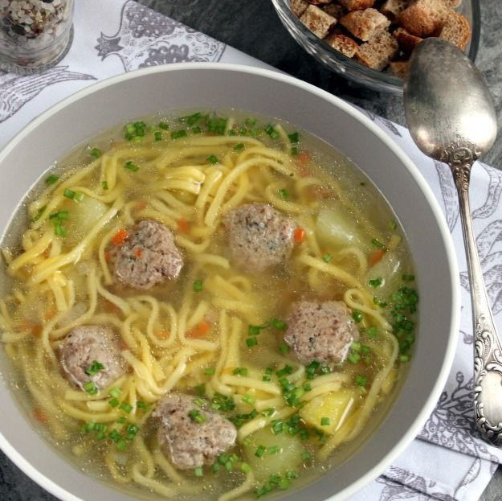

Утиный суп с лапшой (и с фрикадельками)
Ингредиенты:
Фарш утиный - около 400 г
Лапша - 100 г
Вода - 2-2,5 л
Картофель - 3 шт.
Морковь по-корейски - 50 г
Лук - 1 головка/50 г
Прованские травы - 0,5-1 ч.л.
Соль - от 0,3 ч.л. по вкусу
Процесс приготовления:
Для утиного супа с лапшой и фрикадельками подготовьте ингредиенты по списку к рецепту. Лапша может быть домашняя или покупная. Для супов брать морковку по-корейски, но можно и обычную.Лук и морковь нашинкуйте мелким кубиком.
Добавьте в утиный фарш соль и прованские травы. Перемешайте и вымесите до вязкости. Сформируйте шарики - фрикадельки.
Обжарьте фрикадельки на сковороде на среднем огне, уложив их в один слой и периодически переворачивая, в течение 3-5 минут.
Фарш из утиных грудок довольно-таки жирный, поэтому дополнительно добавлять масло для жарки не понадобится. Когда выделится некоторое количество кипящего утиного жира, добавьте на сковороду к фрикаделькам лук и морковь. Потушите все вместе на слабом огне 5-7 минут.
В кипящую воду забросьте картофель, нарезанный крупными кубиками/кусками.
Минут через 15 отправьте лапшу. Перемешайте и варите столько времени, сколько указано на упаковке макаронных изделий.
В конце приготовления, т.е. минут за 5 до конца варки лапши, добавьте практически готовые фрикадельки и лук с морковью.
Очень вкусный насыщенный суп с лапшой и фрикадельками из утиного фарша готов.